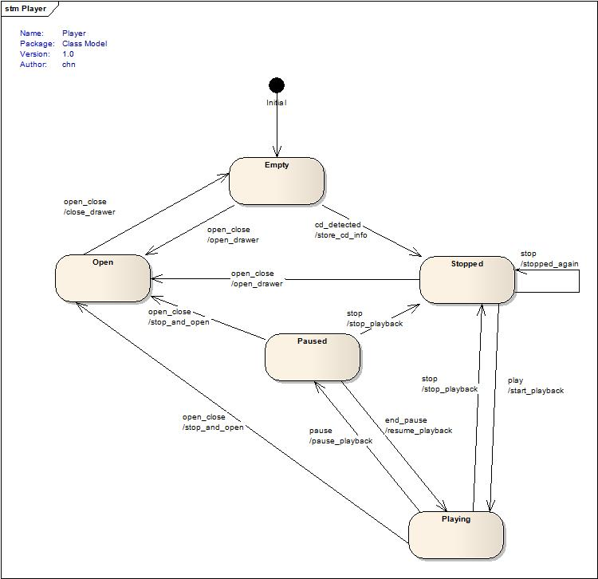
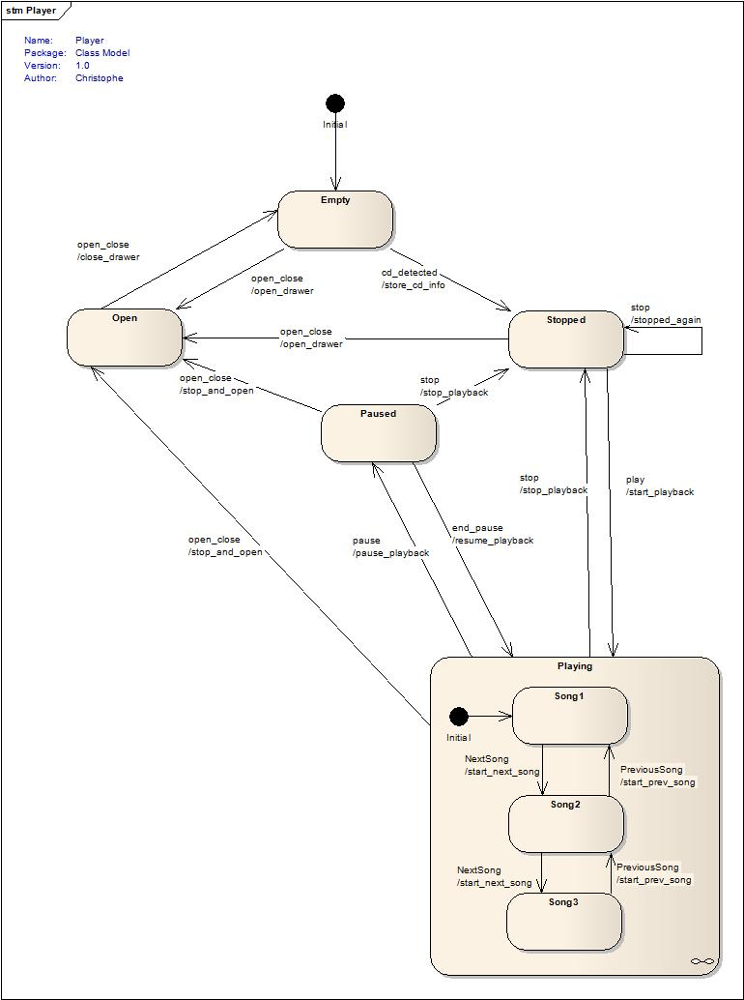
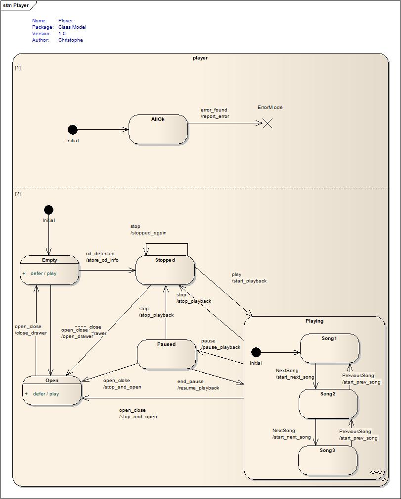
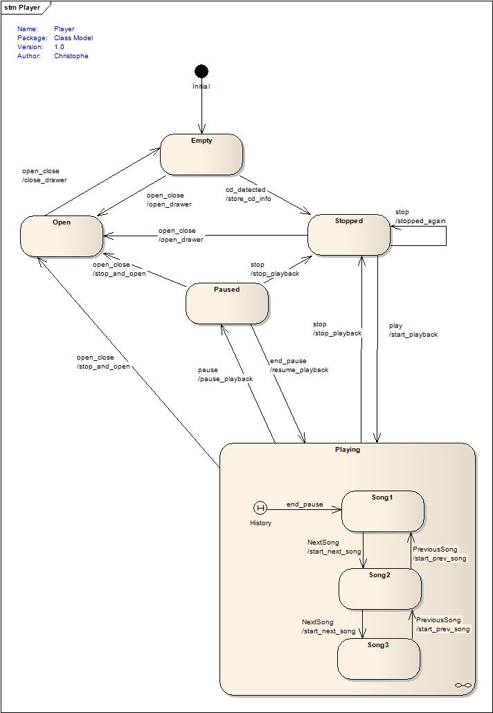
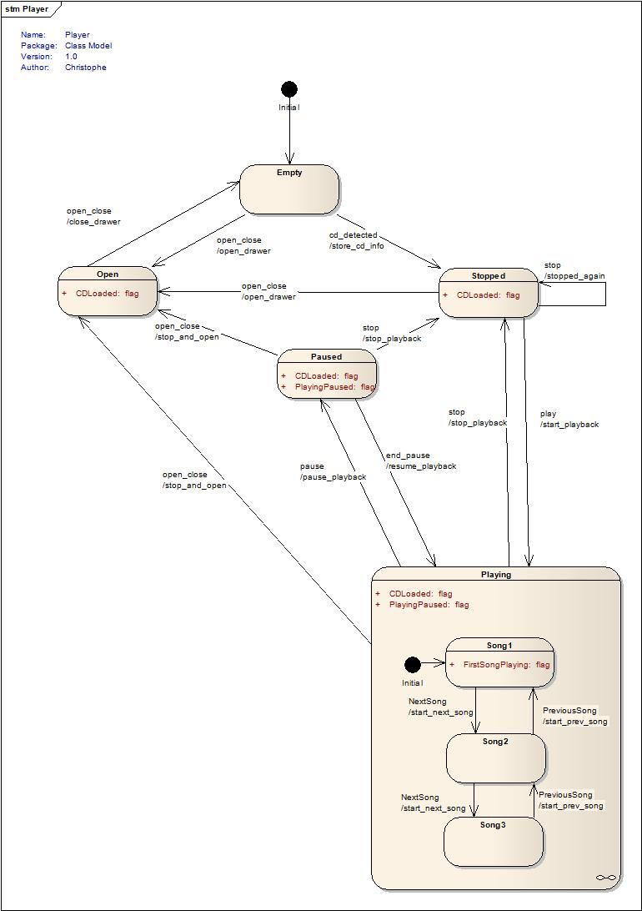
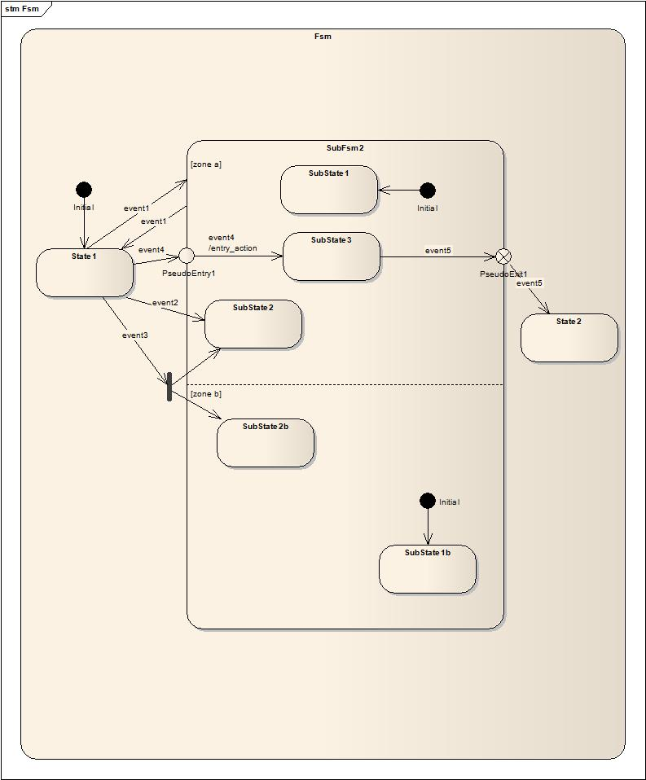
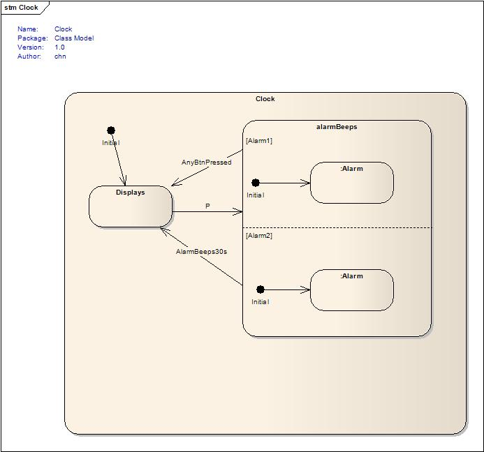
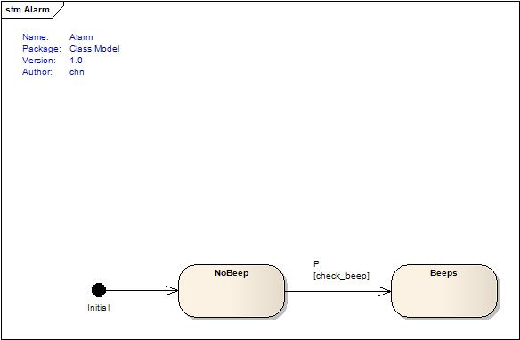

The Msm (Meta State Machine) library v1.20
Christophe Henry,
henry UNDERSCORE christophe AT hotmail DOT com
Contents
Changes compared to previous version
Msm is a framework which enables you to build a Finite State Machine in a straightforward, descriptive and easy-to-use manner . It requires minimal effort to generate a working program from an UML state machine diagram. This work was inspired by the state machine described in the book of David Abrahams and Aleksey Gurtovoy “C++ Template Metaprogramming” and adds most of what UML Designers are expecting from an UML State Machine framework:
Entry and Exit Methods
Guard Conditions
Sub state machines (also called composite states in UML)
History
Terminate Pseudo-State
Deferred Events
Orthogonal zones
Explicit entry into sub state machine states
Fork
Entry / Exit pseudo states
Conflicting transitions
Additional features, absent from the UML specification but nevertheless relevant were also implemented :
Event Queue
A new concept named “flags”. This can be seen as an alternative to Boost.Statechart state_downcast
Interrupted Pseudo-State. A kind of Terminate pseudo-state which can still be left.
Visitors, polymorphic states when needed.
Changes from 1.10 to 1.20 (RC1)
Added visitor implementation
Added by state<>, terminate_state<>... a BASE template parameter in first position defaulting to default_base_state. No breaking change if no SMPtr policy chosen.
Renamed SMPtr/NoSMPtr to sm_ptr / no_sm_ptr. Old names deprecated by still supported.
Added possibility to manually deactivate queuing of messages and exception handling for more speed.
Added automatic deactivation of terminate/interrupt state checking and deferred events if not used.
Changes from 1.0 to 1.10
Corrected bugs that events were not forwarded to the sub- state machine if this sub- state machine appeared only as target in the transition table.
Added explicit entry states into a sub-state machine.
Added fork entry: activation of several explicit entry states from different orthogonal zones.
Added entry pseudo states.
Added exit pseudo states.
Added support for transition conflicts: different transitions triggered by the same event and starting from the same source state, differentiated simply by guard conditions or depth.
Two minor breaking changes had to be done:
terminate_state is now a template type in order to give him, like for normal states, the SMPtrPolicy which allows the state to get a pointer to its containing state machine.
The no_transition method is not called any more in case of an impossible transition if the state machine is used as a composite state in another state machine to better respect the UML specification.
While Boost.Statechart already offers many of the aforementioned features, one may question the very existence of this framework. The following advantages are offered:
Efficiency: The heavily-used metaprogramming techniques described in the book allow a O(1) double dispatch and the non-use of virtual calls. The result is a very efficient code, at the cost of a longer compilation time and bigger executable size.
Declarativeness: At the heart of the framework is a transition table. Boost.Statechart is a very good tool, but to deduce the original state machine diagram from its source code can sometimes be quite a challenge.
Expressiveness: The Domain-Specific-Language represents well the abstraction domain and displays a high ratio of information to syntactic noise.
Metaprogramming tools (see Annex B) can be easily written and add much value to your state machine.
For people working on embedded systems, selling Boost.Statechart has got the handicap O(n) double-dispatch, the virtual calls and the fact that many of them are coming from the C world and thus no fans of big template argument lists or forward-declarations.
The declarative interface of Msm is transparent, and a developer not needing the more complex features is not required to learn them, reducing the "entry cost". As needed, the user may choose to delve further in the more advanced policies and underlying concepts of the library.
What the framework does not yet offer:
built-in multithreading. For the time being, it is not fully decided whether this should be implemented directly in the library or if this should remain at the user's discretion.
If you are looking for an efficient and straightforward UML-based finite state machine framework, we sincerely hope you will enjoy this work!
Let's start with an example taken from C++ Template Metaprogramming:
int main()
{
player p; // an instance of the concrete state Machine
p.start(); // activates the init state (calls on_entry)
p.process_event(open_close()); // user opens CD player
p.process_event(open_close()); // inserts CD and closes
p.process_event(cd_detected(“louie”,”louie”));
p.process_event(play());
...
return 0;
}
The transition table is at the heart of the framework, and is implemented using the following DSL (Domain-Specific-Language):
struct transition_table: mpl::vector<
|
|
|
|
|
|
|
|
|
|
|
|
|
|
|
|
|
|
|
|
|
|
|
|
|
|
|
|
|
|
|
|
|
|
|
|
|
|
|
|
|
|
|
|
|
|
|
|
|
|
|
|
|
|
|
|
|
|
|
|
|
|
|
|
|
|
|
|
|
|
|
|
|
|
|
|
|
|
|
|
|
|
|
|
|
|
|
|
|
|
|
|
|
|
|
|
|
|
|
|
|
|
|
|
|
|
|
|
|
|
|
|
Not very imaginative are we? As you can suspect, this is also taken from the book.
You get one row for every transition. A transition is made of:
a current state
an event provoking the current state to be left and moving to:
a next state, which becomes the next current state
an action method which gets called during the transition, if and only if
a guard condition gives its ok by returning true
For every concrete event, the action method has the following signature:
void
action_method(SomeEvent const&)
//SomeEvent can be play,stop, etc.
And for the guard method:
bool guard_method(
SomeEvent const&)
//SomeEvent can be play,stop, etc.
The event being passed the action/guard methods may contain data, while evident for action methods, is also very useful for guards methods offering a nice alternative to Boost.Statechart's explicit branching requirements.
To define a state, simply derive it from:
terminate_state<>: if the state is a
terminal pseudo-state
interrupt_state<EndInterruptEvent>: if the state is only interrupting the state machine until the event EndInterruptEvent is fired.
state_machine<State> if State must itself
be a sub- state machine (composite in UML)
state<> if it is a normal state
You just need to define the initial state:
typedef Empty initial_state;
As shown in
the above code, you need to start the state machine by calling
start(). This is to avoid calling on_entry immediately at object
creation time and allows you to delay starting the state machine.
And you're ready for the minimal state machine!
Unfortunately, on some compilers, you will need a small workaround:
While VC9 seems perfectly happy with the row syntax, other compilers would not accept it, no matter how much sweet talking is used.
This means that it is not portable to omit the action and guard methods and a transition (row) must be defined by a start state, an event, a next state, an action method and a guard method.
As only the Start, Event and Next are absolutely necessary, and to still allow the nice syntax, Msm provides a few extra row classes:
row takes 5 arguments and only VC9 accepts the last 2 as default
a_row (“a” for action) allows defining only the action and omit the guard condition
g_row (“g” for guard) allows omitting the action method and defining only the guard
_row allows omitting action and guard methods.
For example:
|
|
|
|
|
|
|
|
|
|
|
|
|
|
|
|
|
|
|
|
|
|
|
|
|
|
|
|
|
|
|
|
For greater compatibility, these will be used instead of row in the tutorials.
The previously described transition table is an easily-generated view of the following UML State Machine Diagram:

Now, all we still have to do is to define events, state machine and states, for example:
struct
play
{};
struct
player
: public
state_machine<player>{...}
struct
Empty
: public
state<>
{
//
every (optional) entry/exit methods get the event as parameter.
template
<class Event>
void
on_entry(Event
const&
) {std::cout
<<
"entering:
Empty" <<
std::endl;}
template
<class Event>
void
on_exit(Event
const&
) {std::cout
<<
"leaving:
Empty" <<
std::endl;}
};
The on_entry and on_exit methods are optional. The argument is the event which triggered the state switching.
An initial state must still be defined:
typedef
Empty
initial_state;
The action methods for every transition get the event as argument:
void
start_playback(play
const&)
Guard
conditions simply inhibit a transition from occurring, even if an
acceptable event arrives. The event is passed as parameter, thus
allowing event-data-dependent decisions on whether to take the
transition.
bool
good_disk_format(cd_detected
const& evt)
{...}
By
default, a no_transition
method
is called when an unexpected event is fired. This method simply
asserts when called.
It
is possible to overwrite the no_transition
method
to define a different error handling:
//
Replaces the default no-transition response.
template
<class
Event>
int
no_transition(int
state,
Event
const&
e){...}
That's
it! People familiar to the player state machines of the boost::mpl
example will notice just a few changes:
states
are now classes/structs
so
they can have data. The states get default-constructed at
initialization time.
No
id as an int has to be defined,
which allows reuse of states in other state machines. The ids get
generated at compile-time. The disadvantage is that it makes
debugging harder. See Annex
A for an explanation of how to find the generated id. A small
helper to get a state array as typeid-generated names is explained
in Annex A
and an example is shown at the end of this example.
A
Guard condition
was
added.
A
message queue
was
added so that new events can be generated during a transition.
Quite
easy, isn't it? You may however think the added value is not as great
as promised, which leads us to the next example...
The framework would not be a very big subset of an UML state machine if it didn't support composite states. Now, the UML specification isn't too clear about the difference between composite states and sub-state machines, so let us ignore it for simplicity and define a composite state as a state machine.
A small example is better as a long explanation, so, we had player defined as:
struct
player
: public
state_machine<player>{...}
And playing was a sub-state of it:
struct
Playing
: public
state<>
But now we want Playing to be a nested state machine, like the following diagram shows:

We just need to change its declaration to:
struct
Playing
: public
state_machine<Playing>{...}
And that's it! You can even define the Playing state machine in another file and compile separately. Inside, you just need to define a (public defined) transition table (the heart of the whole system) and the same action / guard, exactly like you did for player.
And keep in mind: no change to player
is required!
For example, as a transition table I defined:
struct transition_table: mpl::vector<
|
|
|
|
|
|
|
|
|
|
|
|
|
|
|
|
|
|
|
|
|
|
|
|
|
|
|
|
|
|
|
|
|
|
|
|
|
|
|
|
|
|
|
|
|
|
|
|
This tutorial will demonstrate three more features that UML defines: Othogonal zones, deferring of events and Terminal States.
It is a very common problem in many state machines to have to handle errors. It usually involves defining a transition from all the states to a special error state. Translation : not fun. Luckily, UML provides some helpful concepts here. The first one is orthogonal zones. See them as state machines running at the same time in a same state machine. The effect is that you have several active states at any time. Actually, you have always the same number of active states as the number of zones is fixed.
We can therefore keep our state machine from the previous example
and just define a new zone made of two states, AllOk and
ErrorMode.
AllOk is most of the time active. But the error_found
error event makes the second zone move to the new active state
ErrorMode. This event does not interest the main zone so
it will simply be ignored. Only if no zone at all handles it will
no_transition get called.
Usually, when you get an error, you do not want other events to be handled. To achieve this, we use another UML feature, terminate states. When any zone moves to a terminate state, the state machine terminates and all further events are ignored.
This is not mandatory, one can use orthogonal zones without terminate states.
We also added a small extension to UML here, interrupt states. If
you declare ErrorMode as interrupt state instead, the
state machine will not handle any event other than the one which ends
the interrupt. So it's like a terminate state, with the difference
that you are allowed to resume the state machine when a condition
(like handling of the original error) is met.
Last but not least, this example also shows here the handling of event deferring. Let's say someone puts a disc and immediately presses play. The event cannot be handled, yet you'd want it to be handled and not force the user to press play again. The solution is to define it as deferred in the Empty and Open states and get it handled in the first state where the event is not to be deferred. It can then be handled or rejected. In this example, only when Stopped becomes active will the event be handled.

Although it may sound arcane, it is rather mundane. You only need to add these two new states and change the definition of initial_state to reflect the second zone:
typedef
mpl::vector<Empty,AllOk>
initial_state;
Now
for the terminate state, simply define ErrorMode as a terminate
state:
struct
ErrorMode
: public
terminate_state<>
Or
as an interrupt state, which can be ended with the event end_error:
struct
ErrorMode
: public
interrupt_state<end_error>
And
you're done with the orthogonal zones! You don't have to give the
zones an id. Please be advised that there is currently no compile
time enforcement of the zone consistency (Msm does not yet check that
the zones are truly orthogonal)
As
for our deferred event, the following typedef in Empty
and
Open
will
do:
typedef
mpl::vector<play>
deferred_events;
With
this, the event will be put in the deferred queue until a state
without this typedef handles or rejects it (with a call to
no_transition).
UML defines two types of histories, Shallow History and Deep History.
What is it and when do you need it? In the previous examples, if the player was playing the second song and the user pressed pause, at the next press on the play button, the Playing state would become active and the first song would play again. Soon would the first client complains follow. They'd of course demand, that if the player was paused, then it should remember which song was playing. But it the player was stopped, then it should restart from the first song.
Now, how can it be done? Of course, you could add a bit of programming logic and generate extra events to make the second song start if coming from Pause. Something like:
if (Event == end_pause)
{
for (int i=0;i< song number;++i)
{
player.process_event(NextSong());
}
}
Not much to like in this example, isn't it? To solve this problem, you define what is called a shallow or a deep history, the difference being that the deep history goes recursively into a sub state machine and reactivates any previously active State.
This is described in the following UML diagram:

You define this in state machine very simply using a policy:
struct
Playing
: public
state_machine<Playing,ShallowHistory<mpl::vector<end_pause>
> >
This states that a shallow history must be activated if the Playing state machine gets activated by the end_pause event and only this one. If the state machine was in the Stopped state and the event play was generated, the history would not be activated and the normal initial state would become active.
By default, history is disabled. For your convenience the library also provides a non-UML standard AlwaysHistory policy which always activates history.
Deep history is not directly available. The reason is that it would conflict with policies which sub- state machines could define. Of course, if say Song1 were a state machine itself, it could use the ShallowHistory policy itself thus creating Deep History.
An example defining Song1 as a state machine is also provided for your entertainment.
The last tutorial is devoted to a concept not defined in UML : flags. It has been added after proving itself useful on many occasions. Please, do not be frightened as we are not talking about ugly shortcuts made of an improbable collusion of booleans.
So what is it and what is its use?
If you look into the Boost.Statechart documentation you'll find some code like:
if ( ( state_downcast< const NumLockOff * >() != 0 ) &&
( state_downcast< const CapsLockOff * >() != 0 ) &&
( state_downcast< const ScrollLockOff * >() != 0 ) )While correct, this can be error-prone and a potential time-bomb when you add new states or orthogonal zones.
And most of all, it hides the real question, which would be “Does my state machine's current state define a special property?”. In this special case “are my keys in a lock state?”. So let's apply the Fundamental Theorem of Software Engineering and move one level of abstraction higher.
In our player example, let's say we need to know if the player has a loaded CD. We could do the same:
if ( ( state_downcast< const Stopped * >() != 0 ) &&
( state_downcast< const Open * >() != 0 ) &&
( state_downcast< const Paused * >() != 0 ) &&
( state_downcast< const Playing * >() != 0 ) )Or flag these 4 states as CDLoaded-able. You can do it like this:
typedef
mpl::vector1<CDLoaded>
flag_list;
Inside each of them. Or make a list of flags, like in playing:
typedef
mpl::vector2<PlayingPaused,CDLoaded>
flag_list;
Now all you need to do, is to check if your flag is active in the current state:
player
p;
if
(p.is_flag_active<CDLoaded>())
...
And what if you have orthogonal zones? How to decide if a state machine is in a flagged state? By default, you keep the same code and the current states will be OR'ed, meaning if one of the active states has the flag, then is_flag_active returns true. Now in some cases, you might want that all of the active states are flagged for the state to be active, then you need to replace the previous line by:
if
(p.is_flag_active<CDLoaded,player::Flag_AND>())
...
The following diagram displays the flag situation in the tutorial.

Please have a look at the DirectEntryTutorial.
Let me count you the ways to enter a composite state, as specified by UML:
Default entry: A transition leads to the edge of a composite state. This is the default entry as seen in the previous tutorials. The initial state in each orthogonal zone becomes active.
Shallow/Deep History entry. See History tutorial.
Explicit entry: if a transition goes to a sub-state of a composite state, this state becomes active and like in the previous examples, its entry action is executed after the entry action form the composite state.
Fork: an explicit entry into more than one region.
Entry point entry: Entering a composite state through an entry point pseudo state. A pseudo state is defined as connecting exactly one transition ending on the pseudo state to one transition inside the composite state having the pseudo state as source. There are two differences with explicit entries. First you have two transitions, meaning two actions (but just one guard as UML forbids guard conditions on the inside transition), second you have only one transition inside the composite. It is defined as a kind of encapsulation.
If the entered composite has more than one region, the regions not directly entered are starting at the initial state.
Exiting is somehow easier:
“Standard” exit: a transition originating from the edge of a composite state to another state
Exit point pseudo state: connects one transition inside a composite state to a transition outside the composite and leading to another (outside) state.
Msm (almost) fully supports these features. Almost because there is currently one limitation, that it is only possible to explicitly enter a sub- composite and not exit it “upwards” this way. To exit, Msm just supports the two previously described methods.
Sounds a bit complicated? Let's explain using an example were all of the previously named methods are used:

We find in this diagram:
a “normal” entering into SubFsm2 triggered by event1 and back to State1 using the same event. In each zone is the initial state activated, so SubState1 and SubState1b.
An explicit entry into SubFsm2::SubState2 for zone a with event2 as trigger, meaning zone b gets the initial state activated, SubState1b.
A fork into zones a and b to the explicit entries SubState2 and SubState2b, triggered by event 3. Both states become active so no zone is default activated (if we had a third zone, it would be).
A connection of two transitions through an entry pseudo state, SubFsm2::PseudoEntry1, triggered by event4 and triggering also the second transition on the same event (both transitions must be triggered by the same event). Zone b gets default-activated and SubState1b becomes active. The event is forwarded from one transition to the other.
An exiting from SubFsm2 using an exit pseudo-state, PseudoExit1, triggered by event5 and again connecting two transitions using the same event. Again, the event is forwarded to the second transition and both zones are left, as SubFsm2 becomes inactive. Note that if event5 is triggered and PseudoExit1 is inactive, a wrong transition will be detected and no_transition called.
Sounds like an awful lot of code to write? Not at all, as Msm offers an easy syntax.
First to define that a state is an explicit entry, you have to make it a state and mark it as explicit, giving as template parameters the owning composite and the zone id (the zone id starts with 0 and corresponds to the first initial state of the initial_state type sequence).
struct SubState2 : public state<> , public explicit_entry<SubFsm2,0>
You can then simply use it in a transition from State1:
|
_row < |
State1, |
Event2, |
SubFsm2::SubState2 |
>, |
We here use a _row but it can be any of the available rows.
Note (also valid for forks): in order to make compile time more bearable for the more standard cases, and unlike initial states, explicit entry states which are not found in the transition table do NOT get automatically created. To explicitly create such states, you need to add in the state machine containing the explicit states a simple typedef giving a sequence of states to be created like:
typedef mpl::vector<SubState2,SubState2b> explicit_creation;
Of course, if these states are found in the transition table, which is the common case, this is not necessary. The tutorial makes use of this typedef for teaching purposes.
Need a fork instead of an explicit entry?
|
_row < |
State1, |
Event3, |
mpl::vector<SubFsm2::SubState2,SubFsm2::SubState2b> |
>, |
With SubState2 defined as before and SubState2b defined as being in the second zone (Caution: Msm does not check yet that the zone is correct):
struct SubState2b : public state<> , public explicit_entry<SubFsm2,1>
To define an entry pseudo state, you need derive from the corresponding class and give the zone id:
struct PseudoEntry1 : public entry_pseudo_state<SubFsm2,0>
And add the corresponding transition in Fsm's transition table:
|
_row < |
State1, |
Event4, |
SubFsm2::PseudoEntry1 |
>, |
And another in SubFsm2 (yes, UML does want it that way), for example this time with an action method:
|
_row < |
PseudoEntry1, |
Event4, |
SubState3, |
&SubFsm2::entry_action |
>, |
And finally, exit pseudo states are to be used almost the same way, but defined differently, with the first template argument being the owning Composite state and the second argument the event to be forwarded (no zone is necessary as the composite is exited anyway):
struct PseudoExit1 : public exit_pseudo_state<SubFsm2,event5>
And you need, as for entry pseudo states, two transitions, one in SubFsm2:
|
_row < |
SubState3, |
Event5, |
PseudoExit1 |
>, |
And one in the containing state machine:
|
_row < |
SubFsm2::PseudoExit1, |
Event5, |
State2 |
>, |
Important note 1: UML defines transiting to an entry pseudo state and having either no second transition or one with a guard as an error but defines no error handling. Msm will tolerate this behavior, the entry pseudo state will simply be the newly active state.
Important note 2: UML defines transiting to an exit pseudo state and having no second transition as an error, and also defines no error handling. Therefore, it was decided to implement exit pseudo state as terminate states and the containing composite not properly exited will stay terminated as it was technically “exited”.
Important note 3: For both pseudo state types are the event to be the same in both transitions.
Two transitions are said to be in conflict if they both exit the same states, according to the UML standard, meaning if for a given event, these two transitions can be triggered.
There are two kinds of conflicts, both supported by Msm:
for a given source state, several transitions have been defined, triggered by the same event but different guards.
An internal transition of a composite state can conflict with a transition causing an exit from the state.
Unfortunately, UML does not fully specify the correct behavior. Msm supports what UML specifies, that the most nested transition has the higher priority.
If two transitions at the same depth are possible, there is no specification, so Msm gives higher priority to the last defined in the transition table.
So, for example you can define (see in SimpleTutorial):
|
|
|
|
|
|
|
|
|
_row < |
Empty, |
cd_detected, |
Stopped |
&fsm::store_cd_info |
&fsm::good_disk_format |
>, |
|
_row < |
Empty, |
cd_detected, |
Playing |
&fsm::store_cd_info |
&fsm::auto_start |
|
The last transition has the highest priority so only if auto_start returns false will the other transition be tested.
To see why the deeper transition has higher priority, check the exit pseudo state tutorial. As you see, there is a transition on event5 inside SubFsm2 leading to the exit pseudo state and another one going from SubFsm2 to State2. So while SubFsm2 is active, we have a conflict. If the deepest-level transition would not have priority, exit pseudo states would not be possible to realize.
All of the states defined in the state machine are created upon program initialization. This has the huge advantage of a reduced syntactic noise. The cost is a small loss of control of the user on the state creation and access. Quite fast came from the beta testers the request of a way for a state to get access to its containing state machine. This is implemented via another policy. An example of this can be found in a bigger player example(defining a state machine with a sub-sub-state machine and several sub-state machines). Basically, a state needs to change its declaration to:
struct
Stopped
: public
state<sm_ptr>
And to provide a set_sm_ptr function:
void
set_sm_ptr(player*
pl)
to get a pointer to the containing state machine. The same applies to terminate_state / interrupt_state and entry_pseudo_state / exit_pseudo_state.
It is a very valid request to have the client code get access to the states' data. After all, the states are created once for good and hang around as long as the state machine does so why not use it? You simply just need sometimes to get information about any state, even inactive ones. An example is if you want to write a coverage tool and know how many times a state is visited. How to do it? Again, quite simply:
player::Stopped*
tempstate
=
p.get_state<player::Stopped*>();
or
player::Stopped&
tempstate2
=
p.get_state<player::Stopped&>();
Depending on your personal taste.
As the framework creates automatically all the states, it has to manage copying a state machine. Once again, a policy enables this.
First you need to know that all the states are created and given to a boost::shared_ptr following the RAII principle. Copying would therefore mean by default shallow copying and if states have data, or worse self-managed pointers, Bad Things happen.
To avoid accidents, assignment and copy constructors are deactivated by default. Too many accidents happened because of accidental copies.
Now, it is possible to copy, but you must state it explicitly. But which copy? Shallow? Deep? Why to pay for a deep copy if you don't want it? The choice is yours. The default policy is NoCopy, but ShallowCopy and DeepCopy policies are also provided. You can use it like:
struct
player: public
state_machine<player,NoHistory,DeepCopy>
ExceptionsNormally, you should not
need exceptions. UML also says little about exceptions. To handle
error, the best UML-safe method is to add an orthogonal zone, like
previously shown.
Now, errors happen. In
this case, the state machine is said to be unstable, because some
exit, actions or entries may have executed. The framework offers a
chance to set it straight by catching std::exception
and calling:
void
exception_caught
(std::exception& e)
Thus
giving you a chance to handle the exception.
Helpers
methodsmsm::state_machine
also provides a few helper methods which you might need but will
probably not:
const
std::vector<int>&
current_state()
const:
the ids of currently active states
const
BaseState*
get_state_by_id(int
id)
const:
returns the state with the given id as a pointer to a (user- or
default-) base state.
bool
is_contained()
const:
returns true if the state machine is used as a composite in another
state machine, false otherwise.
Getting
more speedMsm
is offering many features at a high-speed, but sometimes, for example
in embedded systems, you need more speed and are ready to give up
some features in exchange.
A
process_event
is
doing 5 different jobs:
checking
for terminate/interrupt states
handling
the message queue (for entry/exit/transition actions generating
themselves events)
handling
deferred events
catching
exceptions
handling
the state switching and action calls
Of
these jobs, only the last is absolutely necessary to a state machine
(its core job), the other ones are nice-to-haves which cost CPU time.
In many cases, it is not so important, but in embedded systems, this
can lead to ad-hoc state machine implementations.
Msm
detects itself if a concrete state machine makes use of
terminate/interrupt states and deferred events and deactivates them
if not used. For the other two, if you want them out, you need to
help by indicating in your implementation that you want them out.
This is done with two simple typedefs, for example:
//
Concrete FSM implementation
struct player : public state_machine<player>
{
// no need for exception handling or message queue
typedef int no_exception_thrown;
typedef int no_message_queue;
...//
rest of implementation
What
is the gain? It will depend on your compiler and target system, so
please refer to the performance page
(where an example is also provided). If you use none of these
nice-to-haves, a process_event
can
execute up to 4 times faster. On my Q6600, an average transition
execution lasts 45ns with a full state machine, 10ns in the minimal
case.
Customizing
statesBy default, all states derive from msm::default_base_state, which is neither polymorphic nor has other useful purpose than to define a base for all states. The following part will describe the customization possibilities offered by Msm.
User-defined
base state / Polymorphic statesSometimes you will need states to be polymorphic. You might want to use typeid on them, like the tutorials do for logging.
You might also need some added functionality in form of a virtual function.
Msm offers these possibilities by allowing the base state to be user-defined. To do this, you need two simple changes:
add the non-default base state in your msm::state<>
definition, as first template argument (except for
interrupt_states for
which it is the second argument, the first one being the event
ending the interrupt), for example, my_base_state
being your new base state for all states in a given state
machine: struct
Empty
: public
state<my_base_state>Now,
my_base_state
is
your new base state. If it has a virtual function, your states
become polymorphic. Msm also provides a default polymorphic base
type for your convenience, msm::polymorphic_state
Add
the user-defined base state in the state machine definition, as a
third template argument (after History), for example:struct
player
:
public
state_machine<player,NoHistory,my_base_state>
You
now have polymorphic states. Please have a look at an
example using polymorphic states and the concept presented in the
next paragraph, visitors.
In some cases, having only the id or a pointer-to-base of the currently active states is not enough. You might want to call non-virtually a method of the currently active states. It will not be said that Msm forces the virtual keyword down your throat!
To achieve this goal, Msm provides its own variation of a visitor pattern using the previously described user-defined state technique. If you add to your user-defined base state an accept_sig typedef giving the return value (unused for the moment) and signature and provide an accept method with the same signature, calling state_machine::visit_current_states will cause accept to be called on the currently active states. Typically, you will also want to provide an empty default accept in your base state in order to not force all your states to implement accept. For example your base state could be:
struct my_visitable_state
{
// signature of the accept function
typedef args<void> accept_sig;
// we also want polymorphic states
virtual ~my_visitable_state() {}
// default implementation for states who do not need to be visited
void accept() const {}
};
This makes your states polymorphic and visitable. In this case, accept is made const and takes no argument. It could also be:
struct SomeVisitor {…};
struct my_visitable_state
{
// signature of the accept function
typedef args<void,SomeVisitor&> accept_sig;
// we also want polymorphic states
virtual ~my_visitable_state() {}
// default implementation for states who do not need to be visited
void accept(SomeVisitor&) const {}
};
And now, accept will take one argument. It could also be non-const.
By default, accept takes up to 2 arguments. To get more, simply #define BOOST_MSM_VISITOR_ARG_SIZE to another value before including state_machine.hpp. For example:
#define BOOST_MSM_VISITOR_ARG_SIZE 3
#include <boost/msm/state_machine.hpp>
...
struct my_visitable_state
{
// signature of the accept function
typedef args<void,SomeVisitor&,int,const char*> accept_sig;
// we also want polymorphic states
virtual ~my_visitable_state() {}
// default implementation for states who do not need to be visited. Not const
void accept(SomeVisitor&,int,const char*) {}
};
You now only need implement accept in states needing it. Note that accept will be called on ALL active states but not automatically on substates of a composite. You can however choose to have it called by calling visit_current_states in the accept of the composite.
Important warning: The method visit_current_states takes its parameter by value, so if the signature of the accept function is to contain a parameter passed by reference, pass this parameter with a boost:ref/cref to avoid undesired copies or slicing. So, for example, in the above case, call:
SomeVisitor vis;
sm.visit_current_states(boost::ref(vis));
Please have a look at the example using accept with 0 argument, with 1, and with 3.
Tests were made on different PCs running either Windows XP and Vista and compiled with VC9 SP1 or Ubuntu and compiled with g++ 4.2.3.
For these tests, the same player state machine was written using Boost.Statechart and Msm, as a state machine with only simple states and as a state machine with a composite state. As these simple machines need no terminate/interrupt states, no message queue and have no-throw guarantee on their actions, the tests are made in full- and minimum- functionalities.
Minimum (no exception handling, no message queue):
VC9:
the simple test completes 38 times faster with Msm than with Boost.Statechart
the composite test completes 4 times faster with Msm
gcc 4.2.3:
the simple test completes 16 times faster with Msm
the composite test completes 9 times faster with Msm
gcc 3.3:
the simple test completes 9-12 times faster with Msm
the composite compile but does not work (events of composites lead to no_transition)
Full:
VC9:
the simple test completes 12 times faster with Msm than with Boost.Statechart
the composite test completes 3 times faster with Msm
gcc 4.2.3:
the simple test completes 10 times faster with Msm
the composite test completes 9-10 times faster with Msm
gcc 3.3:
the simple test completes 9 times faster with Msm
the composite compile but does not work (events of composites lead to no_transition)
Msm was successfully tested with:
VC8,VC9, VC9SP1
g++ 4.1 and g++ 4.2.3
partially g++ 3.3-3.4 (only simple state machines). Composite state machines will compile but not work properly.
Compilation times that are going to make you storm the CFO's office and make sure you get a shiny octocore with 8GB RAM by next week, unless he's interested in paying you watch the compiler agonize for hours... (Make sure you ask for dual 24" as well, it doesn't hurt).
Quick need to overwrite the mpl::vector/list default-size-limit of 20.
This framework is based on the brilliant work of David Abrahams and Aleksey Gurtovoy who laid down the base and the principles of the framework in their excellent book, “C++ template Metaprogramming”. The implementation also makes heavy use of the boost::mpl.
Other libraries from Boost also helped me much, like Boost.Bind, Boost.Function, Boost.Shared_ptr.
Special thanks to my beta testers, Christoph Woskowski and Franz Alt for using the framework with little documentation and to my private reviewer, Edouard Alligand.
Thanks to Jeff Flinn for his idea of the user-defined base state.
Question: on_entry gets an argument, the sent event. What event do I get when the state becomes default-activated (because it is an initial state)?
Answer: To allow you to know that the state was default-activated, Msm generates a boost::msm::InitEvent default event.
Question: Why do I see no call to no_transition in my composite state?
Answer: Because of the priority rule defined by UML. It says that in case of transition conflict, the most inner state has a higher priority. So after asking the inner state, the containing composite has to be also asked to handled the transition. So it makes more sense to call his no_transition.
Question: Why do I get a compile error saying the compiler cannot convert to a function ...Fsm::*(some_event)?
Answer: Probably you defined a transition triggered by the event some_event, but used a guard/action method taking another event.
Question: Why do I get a compile error saying something like “too few” or “too many” template arguments?
Answer: Probably you defined a transition in form of a a_row where you wanted just a _row or the other way around.
Question: Why do I get a very long compile error when I define more than 20 rows in the transition table?
Answer: Msm uses Boost.MPL under the hood and this is the default maximum size. Please define the following 2 macros before including headers:
#define BOOST_MPL_CFG_NO_PREPROCESSED_HEADERS #define BOOST_MPL_LIMIT_VECTOR_SIZE 30 // or whatever you need
Let us try to implement the state machine defined in a paper from David Harel (Figure 8 in http://www.wisdom.weizmann.ac.il/~dharel/SCANNED.PAPERS/Statecharts.pdf).
We will discuss here two possible implementations. The first one, shown in the figure 8, is using the UML equivalent of what Harel uses in this chart, explicit entries, described in a previous tutorial.
Please have a look at the source code implementation with Msm.
The biggest advantage of using this method is that the code is very simple and easy to understand.
Now, this method has quite a few disadvantages.
First, we notice that “alarm-beeps” has an implementation visible to the outside world. This particularity is being used and this leads to three states with close names, “alarm1 beeps”, “alarm2 beeps”, “both beep”. If you think that this starts sounding like duplication of information, you are not the only one. The second point is about design and reuse. Let us imagine what could happen if Harel really was working for a company producing watches.
Harel would implement this state machine.
Some time later, he would be asked to do the same for a new model of watch. But this model would have 3 alarms.
Or maybe 4 alarms?
The alarm could be triggered with only a few seconds interval.
Please keep in mind that these companies produce hundreds of slightly different products, which makes this quite a realistic scenario.
What would be the result? New states like “alarm3 beeps” or “three beep” + “both beep” (backward compatibility). Maintenance would quickly become a nightmare. The reason? A breach of encapsulation caused by “alarm beeps” letting other state machines use its internals.
Luckily, UML provides not only the dangerous explicit entry weapons but also some much more powerful ones, which Msm also supports, for example orthogonal zones and instances of a same state machine.
Let us redesign Alarm-Beeps by:
encapsulating the alarm functionality in its own state (machine).
defining orthogonal zones, one for each sub alarm instance. This way it can easily be extended to support new alarms. This leads to the following diagram:

As you see, it is quite simple. You only need define an instance of Alarm in each zone. To add a new alarm is as simple as adding a new instance. The Alarm submachine is simply defined as:

All what still has to be done is to forward the event in the entry method of alarmBeeps to give each alarm instance a chance to handle or reject the event in its check_beep guard condition.
To make implementation easier, each alarm is identified by a bit and check_beep is simply calling operator& to decide if it wants to accept the event.
How are instances defined with Msm? Msm knows only types, not instances, so you need to define Alarms as:
template <int Index> struct Alarm...
And identify each instance in alarmBeeps as Alarm<1>, Alarm<2>, etc. in the initial_state typedef of alarmBeeps, which can therefore do without a single row in its transition table:
typedef mpl::vector<Alarm<1>,Alarm<2> > initial_state;
This way, if Harel ever needs to support a third alarm, he simply needs a third entry in this typedef.
Please have a look at the example not using any explicit entry.
As g++ refuses to accept template state machines, you might need a small workaround: define alarms as a non-template type, then derive each instance from this base type, like:
struct AlarmImpl : public state_machine<AlarmImpl >...
struct Alarm1 : public AlarmImpl...
struct Alarm2 : public AlarmImpl...
An example is also provided.
Which of both methods should you use? It is a matter of taste and you will hear different opinions from different designers. If you need something fast and with a short life cycle, then you could consider the method with explicit entries. If you are more interested in reusable design, then the method using instances is for you.
Normally, one does not need to know the ids generated for all the states of a state machine, unless for debugging purposes, like the pstate function does in the tutorials in order to display the name of the current state. The next annex will show how to automatically display typeid-generated names, but these are not very readable on all platforms, so it can help to know how the ids are generated.
The ids are generated using the transition table, from the “Start” column up to down, then from the “Next” column, up to down,like shown in the next image:
Stopped will get id 0, Open id 1, ErrorMode id 6 and SleepMode (seen only in the “Next” column) id 7.
If you have some implicitly created states, like transition-less initial states or states created using the explicit_creation typedef, these will be added as a source at the end of the transition table.
If you have composite states, a row will be added for them at the end of the table, after the automatically or explicitly created states, which can change their id.
The next help you will need for debugging would be to call the current_state method of the state_machine class, then the display_type helper to generate a readable name from the id.
If you do not want to go through the transition table to fill an array of names, the library provides another helper, fill_state_names, which, given an array of sufficient size (please see Annex B to know how many states are defined in the state machine), will fill it with typeid-generated names.
We can find for the transition table even more uses than what we have seen so far. Let's suppose you need to write a coverage tool. A state machine would be perfect for such a job, if only it could provide some information about its structure. As a matter of fact, thanks to the transition table and Boost.Mpl, it does.
What would you need for a coverage tool? You'd probably need to know how many states are defined in the state machine, and how many events can be fired. This way you could log the fired events and the states visited in the life of a concrete machine and be able to perform some coverage analysis, like “fired 65% of all possible events and visited 80% of the states defined in the state machine”.
To achieve this, Msm provides a few useful tools:
generate_state_set<transition table>: returns a mpl::set of all the states defined in the table.
generate_event_set<transition table>: returns a mpl::set of all the events defined in the table.
Using mpl::size<>::value you can get the number of elements in the set.
display_type defines an operator() sending typeid(Type).name() to cout.
Using a mpl::for_each on the result of generate_state_set and generate_event_set passing display_type as argument will display all the states of the state machine.
Let's suppose you need even more and recursively find the states and events defined in the composite states and thus also having a transition table. No problem! Calling recursive_get_transition_table<Composite> will return you the transition table of the composite state, recursively adding the transition tables of all sub-state machines and sub-sub...-sub-state machines. Then call generate_state_set or generate_event_set on the result to get the full list of states and events.
Again, please have a look at the end of this example to see the tools in action.